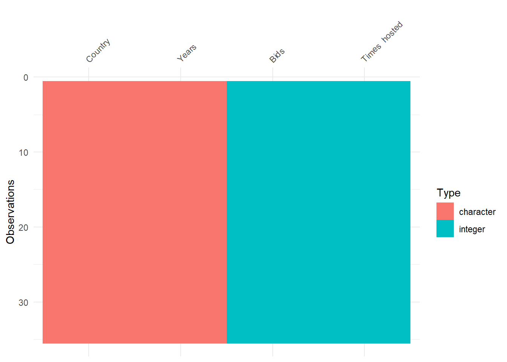
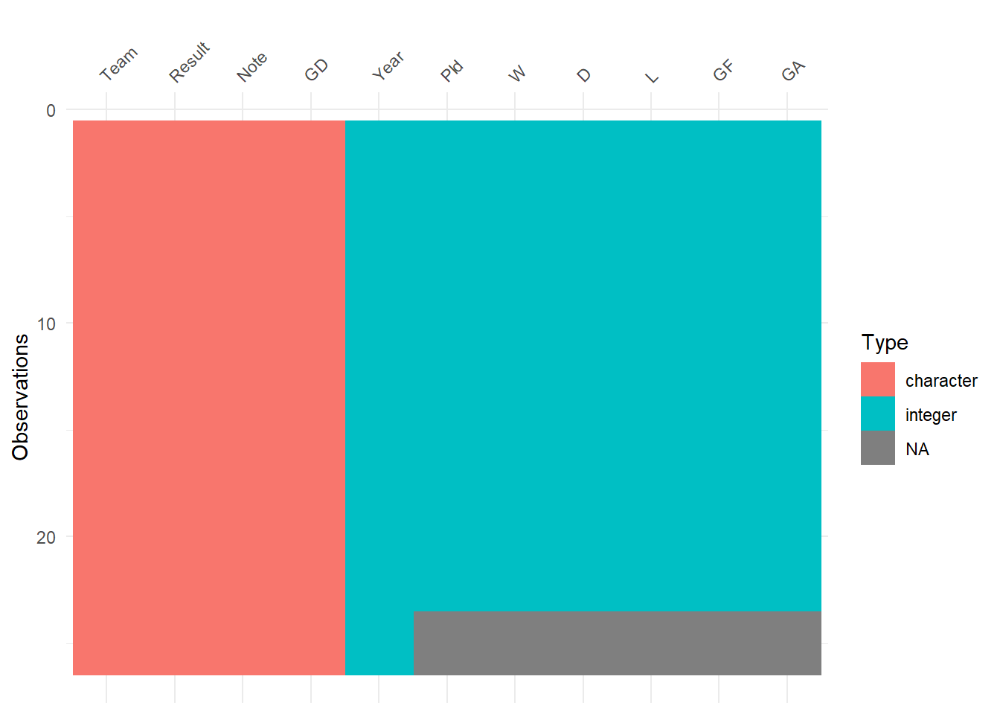
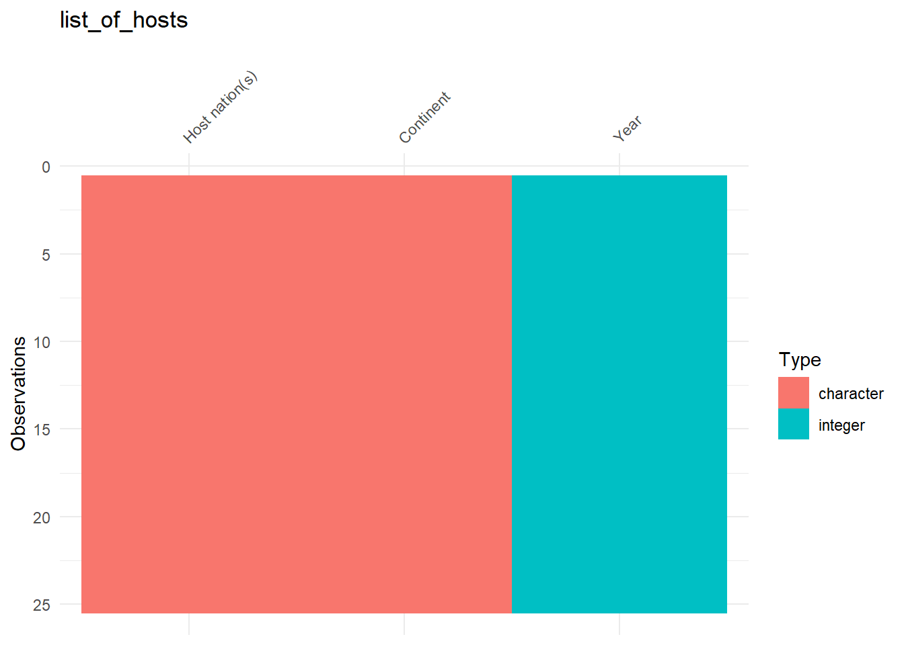
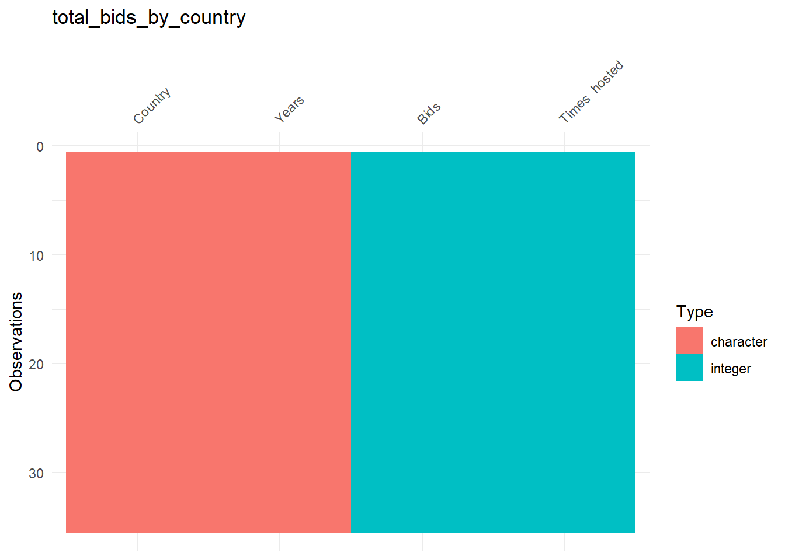
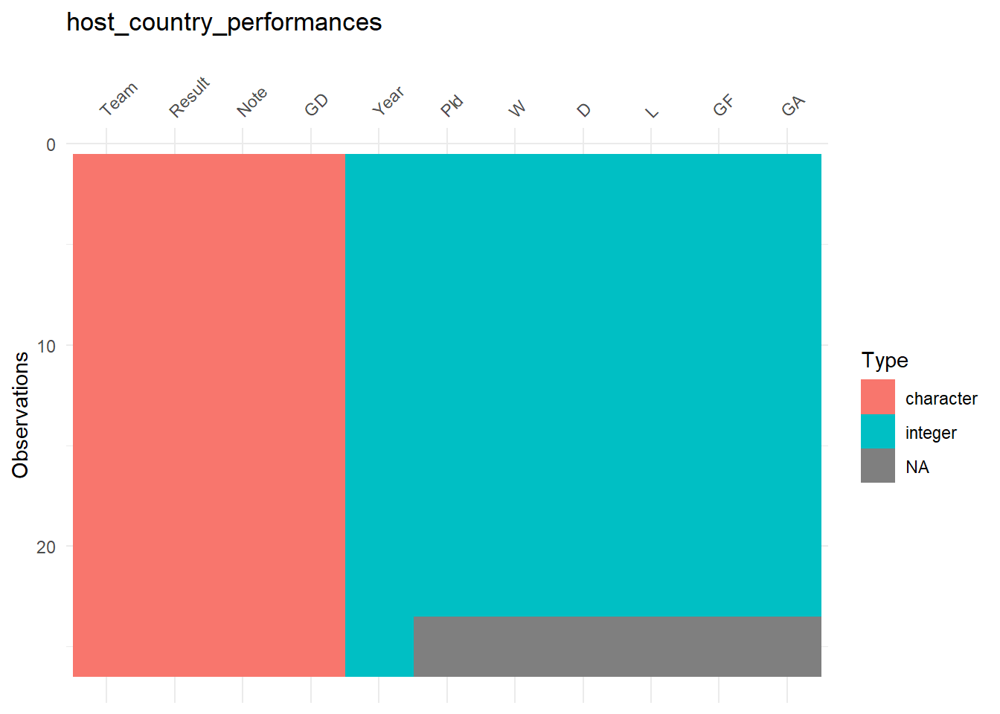
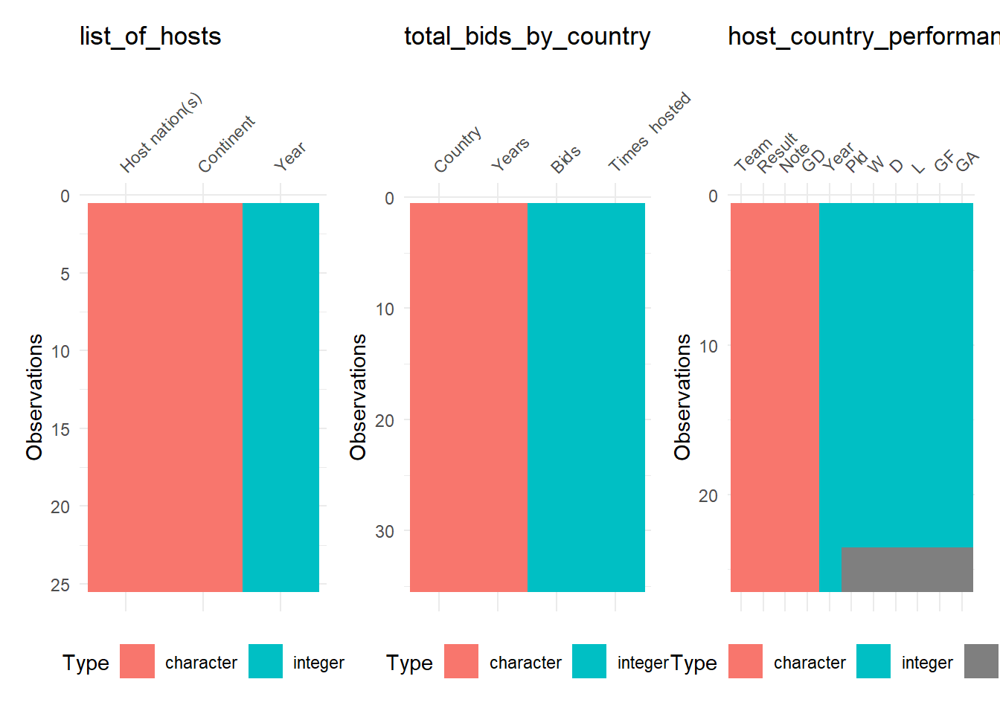

1.1 Where and how can we get the data?
1.1.1 Data retrieval
Generally, we would like to know who (country, continent) hosted when. Since hosting is a lengthy process that starts by bidding and followed by FIFA evaluation. it would be interesting to incorporate bidding data into the analysis.
In this project we will use the data made available in this Wikipedia article about FIFA World Cup hosts
To do that, we are going to use the rvest package to explore and scrape this tables directly into R.
# URL of the article
url <- "https://en.wikipedia.org/wiki/FIFA_World_Cup_hosts"
# Read the webpage and obtain the pieces of the article containing tables
tbls_lst <- url %>%
read_html %>%
html_table()
#number of retrieved tables
length(tbls_lst)## [1] 15We’ve scrapped the Wikipedia article and parsed all the tables, 15 in total! hmm, we don’t need all of them for our analysis. Let’s select only the tables of interest for this tutorial. We’ll limit our data analysis to the subset of tables showing the list of countries that have submitted a bid or actually hosted the world cup and the performance of host countries in our analysis.
# Select tables of interest
tbls_lst <- tbls_lst[c(1,9,10)]
# Assign names to the tables
tables_names <- c("List of hosts",
"Total bids by country",
"Host country performances")
names(tbls_lst) <- tolower(tables_names) %>% str_replace_all(" ","_")Let’s have a quick look at the top of the selected tables
gt::gt(head(tbls_lst$list_of_hosts))| Year | Host nation(s) | Continent |
|---|---|---|
| 1930 | Uruguay | South America |
| 1934 | Italy | Europe |
| 1938 | France | Europe |
| 1942 | Cancelled because of World War II | Cancelled because of World War II |
| 1946 | Cancelled because of World War II | Cancelled because of World War II |
| 1950 | Brazil | South America |
gt::gt(head(tbls_lst$total_bids_by_country))| Country | Bids | Years | Times hosted |
|---|---|---|---|
| Germany | 8 | 1938, 1962,[a] 1966,[a]1974,[a]1982,[a]1990,[a]1998, 2006 | 2 |
| Argentina | 5 | 1938, 1962, 1970, 1978, 2014 | 1 |
| England | 5 | 1966, 1990, 1998, 2006, 2018 | 1 |
| Italy | 5 | 1930, 1934, 1974, 1982, 1990 | 2 |
| Mexico | 5 | 1970, 1978, 1986,[b] 2002, 2026[c] | 3 |
| Morocco | 5 | 1994, 1998, 2006, 2010, 2026 | 0 |
gt::gt(head(tbls_lst$host_country_performances))| Year | Team | Result | Note | Pld | W | D | L | GF | GA | GD |
|---|---|---|---|---|---|---|---|---|---|---|
| 1930 | Uruguay | Champions | Best result, later equalled | 4 | 4 | 0 | 0 | 15 | 3 | +12 |
| 1934 | Italy | Champions | Best result, later equalled | 5 | 4 | 1 | 0 | 12 | 3 | +9 |
| 1938 | France | Quarter-finals | Best result, later improved | 2 | 1 | 0 | 1 | 4 | 4 | 0 |
| 1950 | Brazil | Runners-up | Best result, later improved | 6 | 4 | 1 | 1 | 22 | 6 | +16 |
| 1954 | Switzerland | Quarter-finals | Equalled best result | 4 | 2 | 0 | 2 | 11 | 11 | 0 |
| 1958 | Sweden | Runners-up | Best result | 6 | 4 | 1 | 1 | 12 | 7 | +5 |
Looks good! Next, we’ll have a deeper look at the data to insure that everything is in the right place.
1.1.2 Data quality control
Parsing data from Web is not a perfect process due to different formatting. We’ll start by having a visual inspection of the tables using the package visdat and combine all the tables in a single plot.
#Visualize the content of the tables
(vis_dat_lst <- lapply(tbls_lst,visdat::vis_dat))## Warning: `gather_()` was deprecated in tidyr 1.2.0.
## ℹ Please use `gather()` instead.
## ℹ The deprecated feature was likely used in the visdat package.
## Please report the issue at <https://github.com/ropensci/visdat/issues>.## $list_of_hosts
##
## $total_bids_by_country
##
## $host_country_performances
#Add title of the data to the plot
(vis_dat_lst <- lapply(names(vis_dat_lst), function(dat_name){
#subset the plot of by name
vis <- vis_dat_lst[[dat_name]]
#add title
vis +
labs(title = dat_name)
}))## [[1]]
##
## [[2]]
##
## [[3]]
#combine all the tables in a single plot
vis_dat_lst %>%
patchwork::wrap_plots() &
theme(legend.position = "bottom")
The plots reveal two issues. First, the type of the column “Years” in the second table is character! We’ll fix this later, but now let’s deal with the second issue. The third table shows missing data in many columns! Let’s have a deeper look on this table
gt::gt(tbls_lst[[3]])| Year | Team | Result | Note | Pld | W | D | L | GF | GA | GD |
|---|---|---|---|---|---|---|---|---|---|---|
| 1930 | Uruguay | Champions | Best result, later equalled | 4 | 4 | 0 | 0 | 15 | 3 | +12 |
| 1934 | Italy | Champions | Best result, later equalled | 5 | 4 | 1 | 0 | 12 | 3 | +9 |
| 1938 | France | Quarter-finals | Best result, later improved | 2 | 1 | 0 | 1 | 4 | 4 | 0 |
| 1950 | Brazil | Runners-up | Best result, later improved | 6 | 4 | 1 | 1 | 22 | 6 | +16 |
| 1954 | Switzerland | Quarter-finals | Equalled best result | 4 | 2 | 0 | 2 | 11 | 11 | 0 |
| 1958 | Sweden | Runners-up | Best result | 6 | 4 | 1 | 1 | 12 | 7 | +5 |
| 1962 | Chile | Third place | Best result | 6 | 4 | 0 | 2 | 10 | 8 | +2 |
| 1966 | England | Champions | Best result | 6 | 5 | 1 | 0 | 11 | 3 | +8 |
| 1970 | Mexico | Quarter-finals | Best result, later equalled (again as hosts) | 4 | 2 | 1 | 1 | 6 | 4 | +2 |
| 1974 | West Germany | Champions | Equalled best result, later equalled again | 7 | 6 | 0 | 1 | 13 | 4 | +9 |
| 1978 | Argentina | Champions | Best result, later equalled | 7 | 5 | 1 | 1 | 15 | 4 | +9 |
| 1982 | Spain | Second round (top 12) | 5 | 1 | 2 | 2 | 4 | 5 | −1 | |
| 1986 | Mexico | Quarter-finals | Equalled best result (previous time again as hosts) | 5 | 3 | 2 | 0 | 6 | 2 | +4 |
| 1990 | Italy | Third place | 7 | 6 | 1 | 0 | 10 | 2 | +8 | |
| 1994 | United States | Round of 16 | 4 | 1 | 1 | 2 | 3 | 4 | −1 | |
| 1998 | France | Champions | Best result, later equalled | 7 | 6 | 1 | 0 | 15 | 2 | +13 |
| 2002 | South Korea | Fourth place | Best result | 7 | 3 | 2 | 2 | 8 | 6 | +2 |
| 2002 | Japan | Round of 16 | Best result, later equalled | 4 | 2 | 1 | 1 | 5 | 3 | +2 |
| 2006 | Germany | Third place | 7 | 5 | 1 | 1 | 14 | 6 | +8 | |
| 2010 | South Africa | First round | Equalled best (and worst) result | 3 | 1 | 1 | 1 | 3 | 5 | −2 |
| 2014 | Brazil | Fourth place | 7 | 3 | 2 | 2 | 11 | 14 | −3 | |
| 2018 | Russia | Quarter-finals | Best result as independent nation | 5 | 2 | 2 | 1 | 11 | 7 | +4 |
| 2022 | Qatar | First round | Best result | 3 | 0 | 0 | 3 | 1 | 7 | -6 |
| 2026 | Canada | TBD | NA | NA | NA | NA | NA | NA | ||
| 2026 | Mexico | TBD | NA | NA | NA | NA | NA | NA | ||
| 2026 | United States | TBD | NA | NA | NA | NA | NA | NA |
Apparently, the missing values are yet-to-be-determined performances of the hosting countries in 2026! Therefore, this shouldn’t be a concern and is not a failure of parsing the table.
Before rushing to the analysis, let’s push the tables through a few rounds of quality control.
let’s start by cleaning column names by handling special characters, spaces, and applying a consistent format.
#names of columns before cleaning
lapply(tbls_lst, colnames)## $list_of_hosts
## [1] "Year" "Host nation(s)" "Continent"
##
## $total_bids_by_country
## [1] "Country" "Bids" "Years" "Times hosted"
##
## $host_country_performances
## [1] "Year" "Team" "Result" "Note" "Pld" "W" "D" "L"
## [9] "GF" "GA" "GD"# Clean columns' names
tbls_lst <- lapply(tbls_lst, janitor::clean_names)
#names of columns after cleaning
lapply(tbls_lst, colnames)## $list_of_hosts
## [1] "year" "host_nation_s" "continent"
##
## $total_bids_by_country
## [1] "country" "bids" "years" "times_hosted"
##
## $host_country_performances
## [1] "year" "team" "result" "note" "pld" "w" "d" "l"
## [9] "gf" "ga" "gd"One can see that the column with the countries has a different name (“host_nation_s”, “country”, “team”) in each table. Let’s fix this inconsistency and set an new name ( “country_name”) to all of them.
#old inconsistent names
cols_old <- c("country", "team", "host_nation_s")
#new column name
col_new <- "country_name"
#apply the replacement
(tbls_lst <- lapply(tbls_lst, function(tbl){
tbl %>%
rename_with(~ ifelse(.x %in% cols_old,
col_new,
.x))
}))## $list_of_hosts
## # A tibble: 25 × 3
## year country_name continent
## <int> <chr> <chr>
## 1 1930 Uruguay South America
## 2 1934 Italy Europe
## 3 1938 France Europe
## 4 1942 Cancelled because of World War II Cancelled because of World War II
## 5 1946 Cancelled because of World War II Cancelled because of World War II
## 6 1950 Brazil South America
## 7 1954 Switzerland Europe
## 8 1958 Sweden Europe
## 9 1962 Chile South America
## 10 1966 England Europe
## # … with 15 more rows
##
## $total_bids_by_country
## # A tibble: 35 × 4
## country_name bids years times…¹
## <chr> <int> <chr> <int>
## 1 Germany 8 1938, 1962,[a] 1966,[a]1974,[a]1982,[a]1990,[a]1… 2
## 2 Argentina 5 1938, 1962, 1970, 1978, 2014 1
## 3 England 5 1966, 1990, 1998, 2006, 2018 1
## 4 Italy 5 1930, 1934, 1974, 1982, 1990 2
## 5 Mexico 5 1970, 1978, 1986,[b] 2002, 2026[c] 3
## 6 Morocco 5 1994, 1998, 2006, 2010, 2026 0
## 7 Spain 5 1930, 1966, 1974, 1982, 2018[d] 1
## 8 Brazil 4 1950, 1994, 2006, 2014 2
## 9 Colombia 4 1970, 1978, 1986,[b]2014 1
## 10 United States 4 1986, 1994, 2022, 2026[c] 2
## # … with 25 more rows, and abbreviated variable name ¹times_hosted
##
## $host_country_performances
## # A tibble: 26 × 11
## year country_name result note pld w d l gf ga gd
## <int> <chr> <chr> <chr> <int> <int> <int> <int> <int> <int> <chr>
## 1 1930 Uruguay Champions Best… 4 4 0 0 15 3 +12
## 2 1934 Italy Champions Best… 5 4 1 0 12 3 +9
## 3 1938 France Quarter-f… Best… 2 1 0 1 4 4 0
## 4 1950 Brazil Runners-up Best… 6 4 1 1 22 6 +16
## 5 1954 Switzerland Quarter-f… Equa… 4 2 0 2 11 11 0
## 6 1958 Sweden Runners-up Best… 6 4 1 1 12 7 +5
## 7 1962 Chile Third pla… Best… 6 4 0 2 10 8 +2
## 8 1966 England Champions Best… 6 5 1 0 11 3 +8
## 9 1970 Mexico Quarter-f… Best… 4 2 1 1 6 4 +2
## 10 1974 West Germany Champions Equa… 7 6 0 1 13 4 +9
## # … with 16 more rowsSimilarly, the year column is called “years” in the second table. Let’s make it consistent with the other tables and rename it to “year”.
tbls_lst$total_bids_by_country <- tbls_lst$total_bids_by_country %>%
dplyr::rename(year = "years")Next, we need to insure that the data is “tidy”. Obviously, this is not the case for the table below where the column column “years” show mutliple dates concatenated in the same row
tbls_lst$total_bids_by_country## # A tibble: 35 × 4
## country_name bids year times…¹
## <chr> <int> <chr> <int>
## 1 Germany 8 1938, 1962,[a] 1966,[a]1974,[a]1982,[a]1990,[a]1… 2
## 2 Argentina 5 1938, 1962, 1970, 1978, 2014 1
## 3 England 5 1966, 1990, 1998, 2006, 2018 1
## 4 Italy 5 1930, 1934, 1974, 1982, 1990 2
## 5 Mexico 5 1970, 1978, 1986,[b] 2002, 2026[c] 3
## 6 Morocco 5 1994, 1998, 2006, 2010, 2026 0
## 7 Spain 5 1930, 1966, 1974, 1982, 2018[d] 1
## 8 Brazil 4 1950, 1994, 2006, 2014 2
## 9 Colombia 4 1970, 1978, 1986,[b]2014 1
## 10 United States 4 1986, 1994, 2022, 2026[c] 2
## # … with 25 more rows, and abbreviated variable name ¹times_hostedwhat we need to do is to split years of bids into separate entries and convert it to numeric
#separate concatenated years into separate rows
(tbls_lst$total_bids_by_country <- tbls_lst$total_bids_by_country %>%
mutate(year = str_extract_all(year, "[0-9]+")) %>%
unnest(year) %>%
mutate(year = as.numeric(year)))## # A tibble: 90 × 4
## country_name bids year times_hosted
## <chr> <int> <dbl> <int>
## 1 Germany 8 1938 2
## 2 Germany 8 1962 2
## 3 Germany 8 1966 2
## 4 Germany 8 1974 2
## 5 Germany 8 1982 2
## 6 Germany 8 1990 2
## 7 Germany 8 1998 2
## 8 Germany 8 2006 2
## 9 Argentina 5 1938 1
## 10 Argentina 5 1962 1
## # … with 80 more rowsand do the same thing by splitting cohosts of the same world cup (e.g. “Japan South Korea”) into separate rows entries (“Japan”, “South Korea”).
#separate cohosting countries into separate entries
tbls_lst$list_of_hosts <- tbls_lst$list_of_hosts %>%
mutate(country_name = str_split(country_name, "\\s{2}")) %>%
unnest(country_name) %>%
dplyr::rename(host_year = "year")Have a look on separate_rows() for another way to achieve the same effect
Next, let’s give a meaningful order to the results of the teams.
#order of the results
results_order <- c("Champions",
"Runners-up",
"Third place",
"Fourth place",
"Quarter-finals",
"Round of 16",
"Second round",
"First round",
"TBD"
)
#set the order
tbls_lst$host_country_performances <- tbls_lst$host_country_performances %>%
mutate(result = ifelse(result == "Second round (top 12)", "Second round", result),
result = factor(result, levels = results_order))And we’ll end this part by defining a new column with country code (isoc2).
#get iso2 code of each country (flags for Yugoslavia and England are missing)
(tbls_lst <- lapply(tbls_lst,function(tbl){
tbl$country_code <- countrycode::countrycode(tbl$country_name,
"country.name",# the provided country label
"iso2c"# the country code
)
tbl
}))## Warning in countrycode_convert(sourcevar = sourcevar, origin = origin, destination = dest, : Some values were not matched unambiguously: Cancelled because of World War II, England## Warning in countrycode_convert(sourcevar = sourcevar, origin = origin, destination = dest, : Some values were not matched unambiguously: England, Yugoslavia## Warning in countrycode_convert(sourcevar = sourcevar, origin = origin, destination = dest, : Some values were not matched unambiguously: England## $list_of_hosts
## # A tibble: 28 × 4
## host_year country_name continent count…¹
## <int> <chr> <chr> <chr>
## 1 1930 Uruguay South America UY
## 2 1934 Italy Europe IT
## 3 1938 France Europe FR
## 4 1942 Cancelled because of World War II Cancelled because of Wor… <NA>
## 5 1946 Cancelled because of World War II Cancelled because of Wor… <NA>
## 6 1950 Brazil South America BR
## 7 1954 Switzerland Europe CH
## 8 1958 Sweden Europe SE
## 9 1962 Chile South America CL
## 10 1966 England Europe <NA>
## # … with 18 more rows, and abbreviated variable name ¹country_code
##
## $total_bids_by_country
## # A tibble: 90 × 5
## country_name bids year times_hosted country_code
## <chr> <int> <dbl> <int> <chr>
## 1 Germany 8 1938 2 DE
## 2 Germany 8 1962 2 DE
## 3 Germany 8 1966 2 DE
## 4 Germany 8 1974 2 DE
## 5 Germany 8 1982 2 DE
## 6 Germany 8 1990 2 DE
## 7 Germany 8 1998 2 DE
## 8 Germany 8 2006 2 DE
## 9 Argentina 5 1938 1 AR
## 10 Argentina 5 1962 1 AR
## # … with 80 more rows
##
## $host_country_performances
## # A tibble: 26 × 12
## year countr…¹ result note pld w d l gf ga gd count…²
## <int> <chr> <fct> <chr> <int> <int> <int> <int> <int> <int> <chr> <chr>
## 1 1930 Uruguay Champ… Best… 4 4 0 0 15 3 +12 UY
## 2 1934 Italy Champ… Best… 5 4 1 0 12 3 +9 IT
## 3 1938 France Quart… Best… 2 1 0 1 4 4 0 FR
## 4 1950 Brazil Runne… Best… 6 4 1 1 22 6 +16 BR
## 5 1954 Switzer… Quart… Equa… 4 2 0 2 11 11 0 CH
## 6 1958 Sweden Runne… Best… 6 4 1 1 12 7 +5 SE
## 7 1962 Chile Third… Best… 6 4 0 2 10 8 +2 CL
## 8 1966 England Champ… Best… 6 5 1 0 11 3 +8 <NA>
## 9 1970 Mexico Quart… Best… 4 2 1 1 6 4 +2 MX
## 10 1974 West Ge… Champ… Equa… 7 6 0 1 13 4 +9 DE
## # … with 16 more rows, and abbreviated variable names ¹country_name,
## # ²country_codeQuality control is not over yet! We need to manually apply some historical modification to the data.
First, let’s correct the entry of Colombia. After being chosen as a host in 1986, the country had to withdrew from hosting the cup due to economic concerns.
tbls_lst$total_bids_by_country <- tbls_lst$total_bids_by_country %>%
mutate(times_hosted = ifelse(country_name == "Colombia", 0, times_hosted))Second, as Berlin Wall was brought to the ground few decades ago, let’s replace West Germany” with “Germany”.

West Germany national team
tbls_lst <- lapply(tbls_lst, function(tbl){
tbl %>%
mutate(across(where(is.character), #select character columns
~ str_replace(.x, "West Germany", "Germany") #define replacement
)
)
})Now that the data is analysis-ready, it is time to explore some interesting questions!